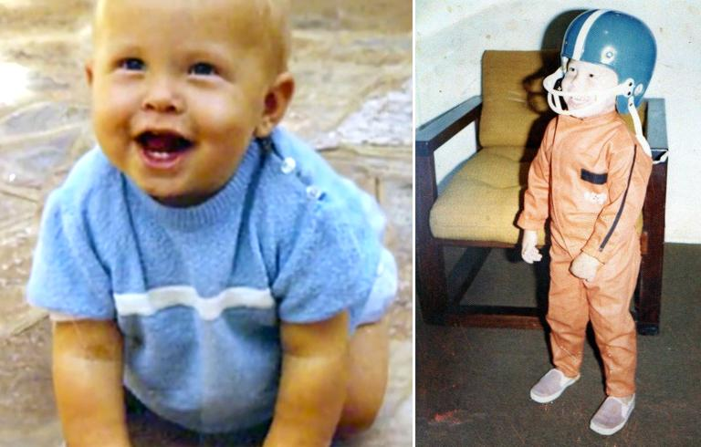

Home
Как закачать майнкрафт?
Steam
Илон Маск
Илон (Элон) Рив Маск (англ. Elon Reeve Musk) — канадско-американский инженер, предприниматель, изобретатель, инвестор. Илон Маск — основатель компаний Paypal, SpaceX, Tesla, а также член совета директоров компании SolarCity, основанной его двоюродными братьями.
Ранние годы и детство Илона Маска
Илон Маск родился 28 июня 1971 года в Претории (ЮАР).
Мать — Мей Маск, была моделью и известным диетологом. Отец — Эррол Маск, — пилот, моряк и инженер. Зарабатывал консультациями.
В семье было трое детей: Илон, Кимбал и дочь Тоска. Мей и Эррол развелись, когда дети были маленькими. Но они остались с отцом, и Эррол Маск смог воспитать успешных детей.

Илон и Кимбал учились в Pretoria Boys High School. Илон окончил школу с отличными отметками по физике и информатике. При этом в школе Маску приходилось нелегко в отношениях с другими детьми, после одного из избиений ему пришлось восстанавливать сломанный нос, говорится в биографии Илона Маска в Википедии.